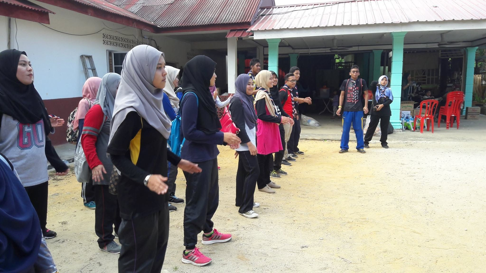
Sports & Outdoor Activities
Football, badminton, cycling and field games are part of the regular weekend programme. Physical activity is encouraged to promote health, discipline and camaraderie among the children.
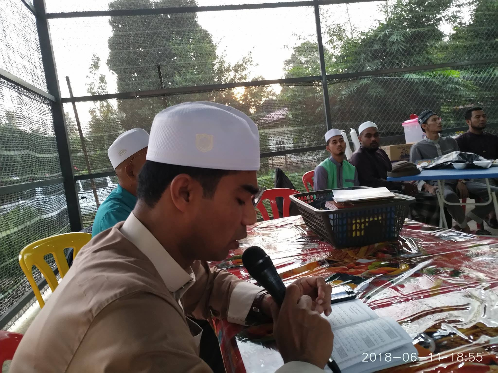
At the heart of life at Nur Hidayah is Islamic education. Children begin each day with Subuh prayers in congregation, followed by structured Quran recitation and memorisation (tahfiz) sessions led by a resident Ustaz or Ustazah.
The programme covers:
These Islamic principles are considered the most important pillar in the upbringing of children at Nur Hidayah, forming a moral compass that will guide them throughout their lives.
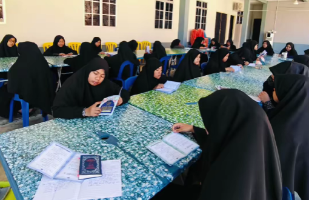
All residents attend government primary and secondary schools in the surrounding Bukit Gantang and Changkat Jering area. After school, they return to Nur Hidayah where staff and volunteers assist with homework and provide extra tuition.
Academic support provided includes:
Three former residents of Nur Hidayah have continued their studies to college level, a significant milestone that was celebrated with pride by all residents of the home.
Volunteer as a TutorBeyond faith and academics, children at Nur Hidayah enjoy regular recreational activities that build teamwork, creativity and practical life skills.

Football, badminton, cycling and field games are part of the regular weekend programme. Physical activity is encouraged to promote health, discipline and camaraderie among the children.
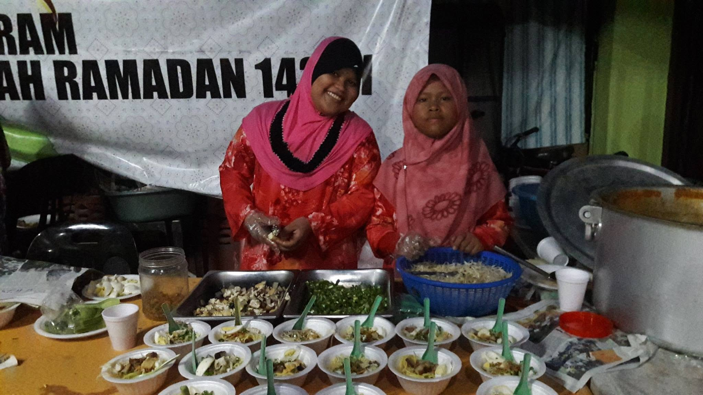
Older children participate in cooking sessions as part of their preparation for independent living. They learn to prepare simple, nutritious meals, a practical skill that is important for their future.
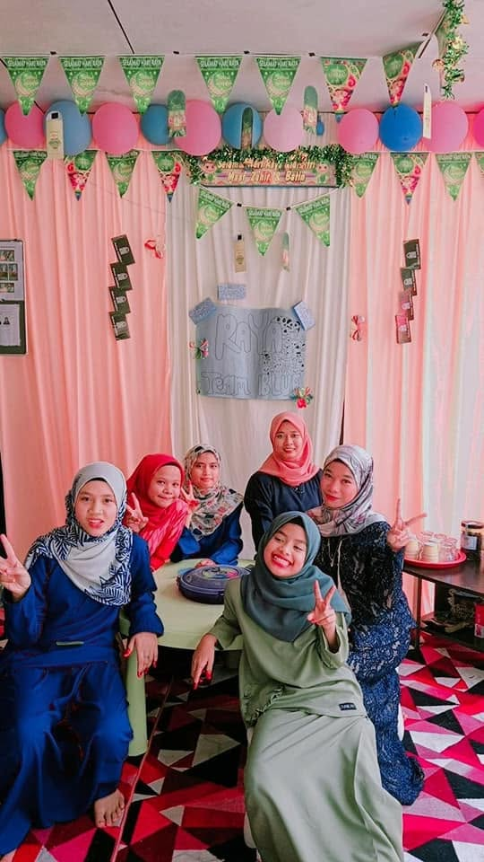
Hari Raya Aidilfitri is celebrated with special meals, new clothes and communal prayers. The children also celebrate Maulidur Rasul and other Islamic occasions with appropriate programmes and gatherings.
| Time / Session | Monday–Friday | Saturday | Sunday |
|---|---|---|---|
| Morning | Subuh prayers + Quran recitation, then school | Subuh prayers + Quran memorisation class | Subuh prayers + Islamic studies |
| Afternoon | School (government school) | Supervised free time / chores | Cooking / life-skills activity |
| Evening | Return from school, homework & tuition | Sports & outdoor games | Community programme / visitor day |
| Night | Maghrib & Isyak prayers, dinner, rest | Maghrib & Isyak prayers, dinner, rest | Maghrib & Isyak prayers, dinner, rest |
You do not need to be a professional to make a lasting impact. Your time and skills are genuinely valued.
Volunteers play a vital role in the lives of children at Nur Hidayah. Whether you are a teacher, student, professional or simply someone with a willing heart, there is a place for you here.
Areas where volunteers are most needed:
Group visits from schools, universities, corporations or NGOs are warmly welcomed — but must be arranged in advance. Please do not visit without prior coordination.
Register as a Volunteer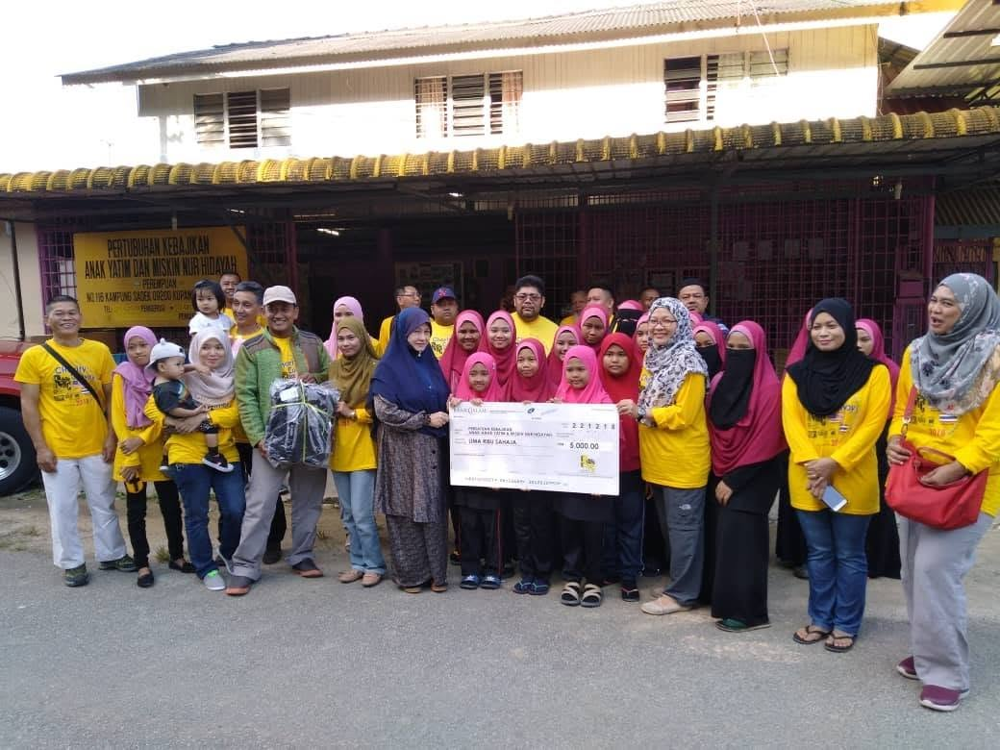
Moments from daily life, volunteer visits and special events at Nur Hidayah.
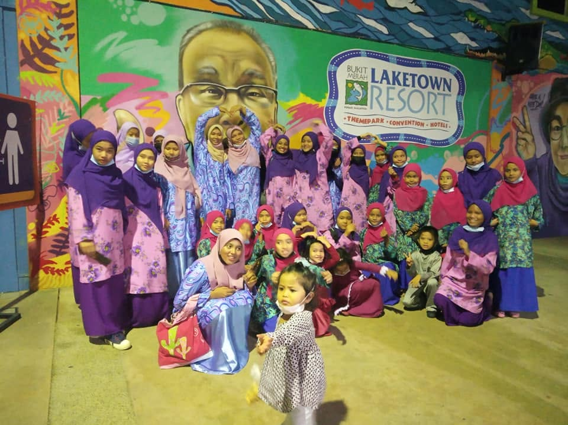
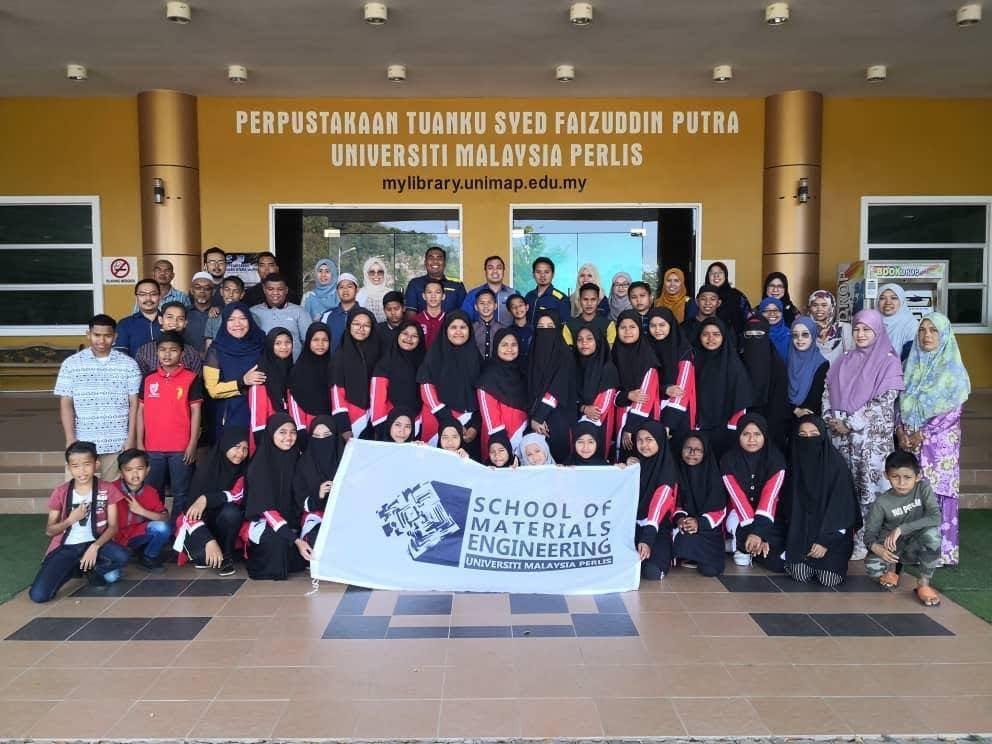
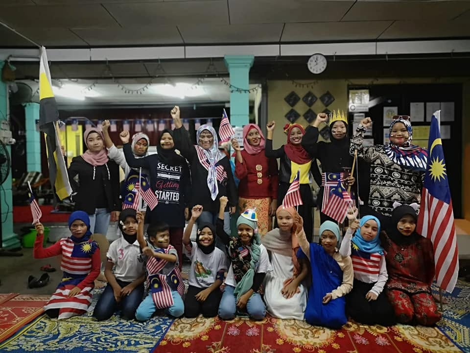
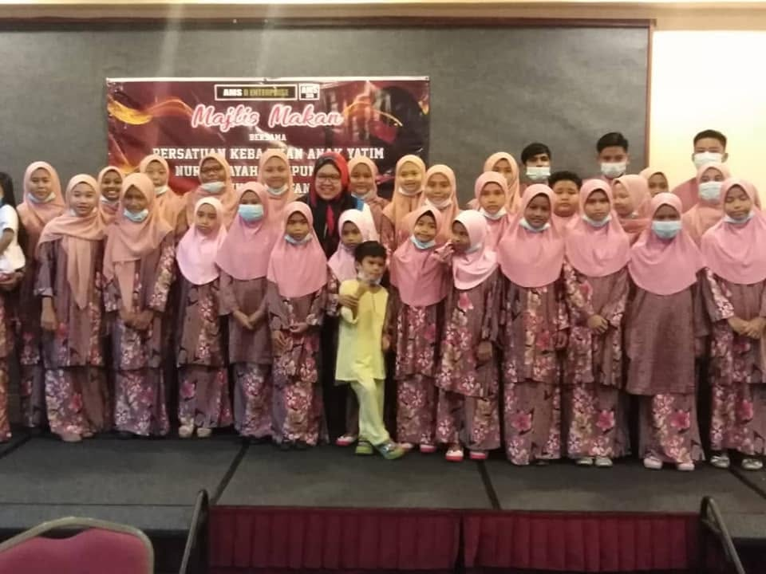
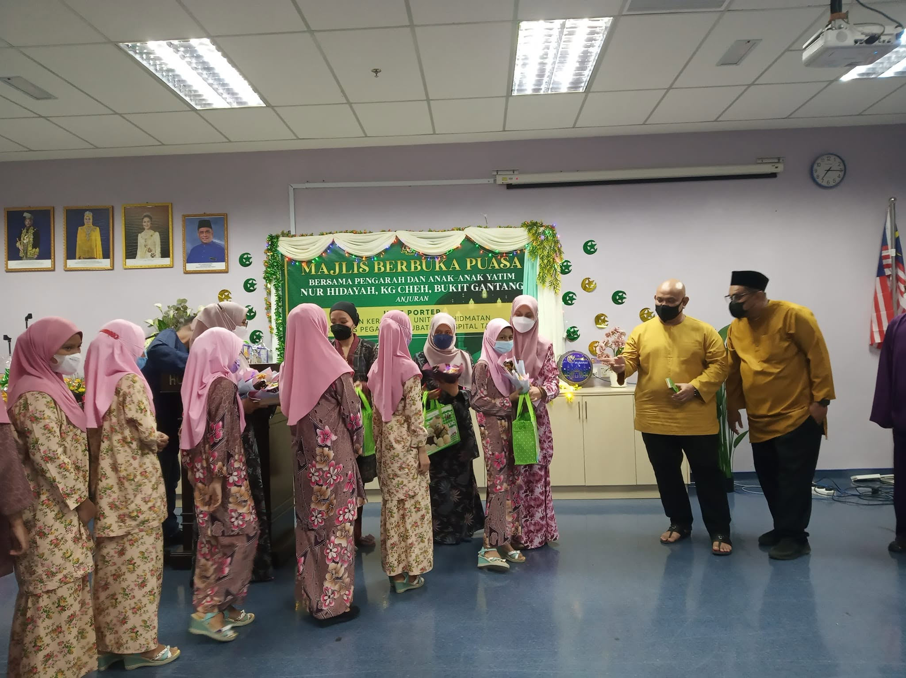
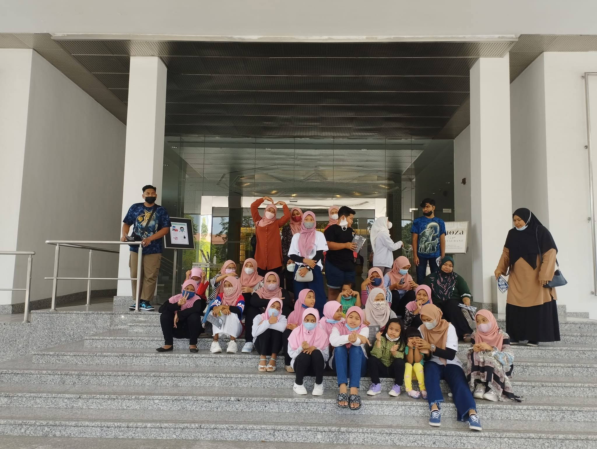